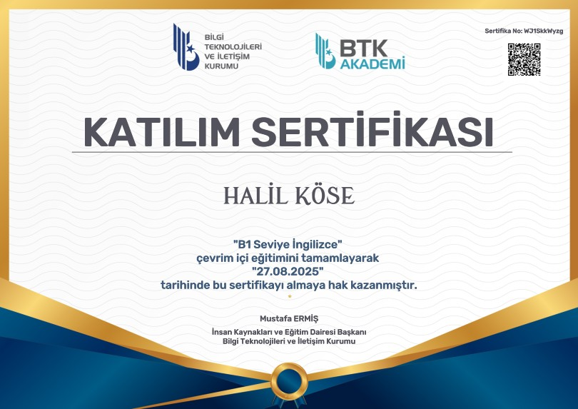

Sertifikalar
Aldığım Sertifikalar
Eğitim sürecimde ve kendi çalışmalarımla kazandığım sertifikalar.

C# Basic
HackerRank
2025

B1 Seviye İngilizce
BTK Akademi
2025

Unity Eğitimi
Turkcell Geleceği Yazanlar
2024